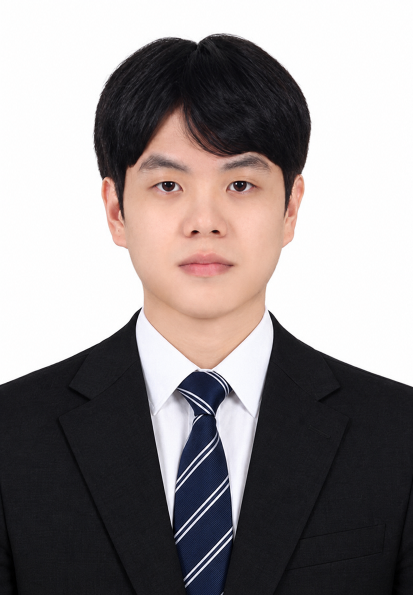

Dong-u Shin · IDEA LAB
WHO I AM
Dong-u Shin
공학 지식을 설계의 지능으로,
AI 예측을 최적 설계의 해답으로 연결하다
Engineering AI researcher at the intersection of knowledge-driven systems, prediction, and optimization.
AFFILIATIONIDEA LAB · Hanyang University ERICA
LAB LOCATIONERICA
EMAILsea7yy@naver.com ↗
RESEARCH LABIDEA LAB Official Website ↗
ACADEMIC BACKGROUND
Education
Education history includes the planned start date for the integrated graduate program.